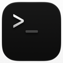
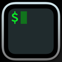
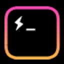

agent-deck · icon app · bước 7
Icon đã chốt: bố cục A · bản 2 Nền iris
Dấu nhắc >_ trên khung tối, hai khung tím ló ra góc trên-phải. File nguồn: agent-deck-icon.svg (từ 48px trở lên) và agent-deck-icon-small.svg (16–32px).
- Nền
- iris-9 #5b5bd6
- Khung sau xa
- iris-8 #9b9ef0
- Khung sau gần
- iris-dark-11 #b1a9ff
- Khung trước
- slate-dark-1 #111113
- Dấu >
- slate-dark-12 #edeef0 · 16.25 AA trên khung trước
- Con trỏ _
- amber-9 #ffc53d · 11.95 AA trên khung trước
- Lưới
- Canvas 1024, squircle 824 bo 185 (lưới icon macOS)
Các cỡ
Bản lớn dùng cho Dock, Launchpad, Cmd+Tab. Ở 16 và 32px, ba khung với nét mảnh dính vào nhau, nên có thêm bản nhỏ: chỉ một khung sau, nét dày hơn, không đổ bóng.
128
64
48
32 · bản lớn ↔ bản nhỏ
16 · bản lớn ↔ bản nhỏ
Ở 16px (màn 1x), bản nhỏ vẫn còn rõ dấu > và vệt amber. Bản lớn thì dấu > mờ, vệt amber gần như mất. Màn Retina vẽ 16pt bằng ảnh 32px, nên ở đó bản nhỏ dư sức đọc.
Dock · nền sáng và nền tối, có và không có badge
Badge đỏ là của hệ điều hành, gắn ở góc trên-phải, đúng chỗ hai khung tím ló ra. Hiện app chưa có badge (chưa có trong SRS), nhưng nếu sau này thêm badge đếm phiên chờ thì sẽ thấy cảnh này.
3
3
Cần biết: badge che gần hết khung sau xa. Icon vẫn nhận ra nhờ khung tối và >_, không mất nghĩa.
Cmd+Tab · Finder · taskbar Windows
Notes.app
agent-deck.app
Terminal.app
agent-deck.app
Taskbar Windows 11, 24px, tối và sáng
Ổn: trên dòng chọn màu iris của Finder, viền tím của icon hoà vào nền, nhưng khung đen giữa icon vẫn tách rõ. Trên taskbar Windows, icon vẫn có squircle macOS (Tauri dùng chung một file nguồn) nên trông nhỏ hơn icon vuông của Windows một chút.
macOS dạng đơn sắc (Tinted) · giả lập
Khi người dùng bật chế độ icon đơn sắc, macOS bỏ màu và giữ độ sáng. Ở đây giả lập bằng bộ lọc xám, không phải ảnh do macOS dựng.
Màu
Đơn sắc (giả lập)
Ổn: khi bỏ màu, ba khung vẫn tách nhau theo độ sáng (đậm → nhạt → đen), nên hình xếp không mất. Vệt amber thành xám nhạt nhưng vẫn đọc ra là _.
Cạnh các app terminal khác
Icon của các app khác cắt từ ảnh chụp trang chủ của họ (refs/icon/), độ nét chỉ đủ để so.

Terminal
iTerm2
Hyperkitty
agent-deck
Khác biệt: trong nhóm này chỉ agent-deck có nền màu đặc, ba app kia nền đen. Hai khung xếp là chi tiết không app nào có.
Các bản đã cân nhắc (bước 5–6)
Bố cục xám: wireframe.html. Reference: references.md. Token: tokens.md.